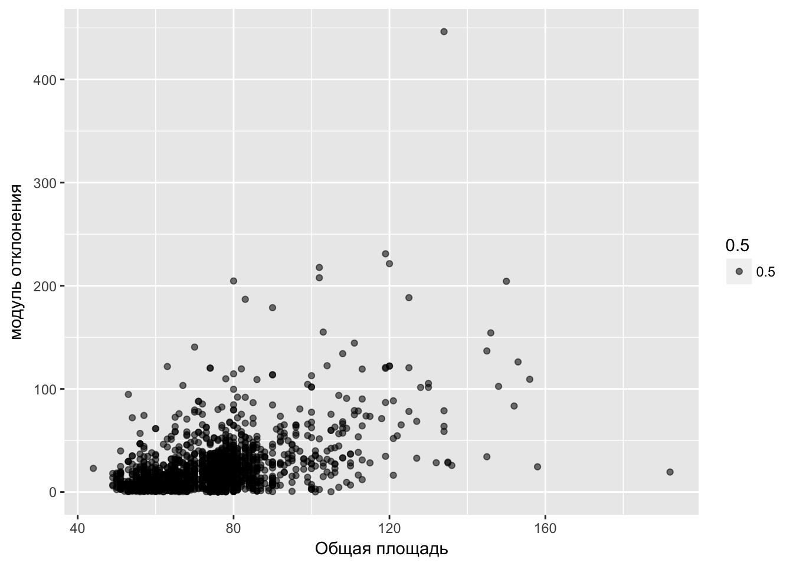
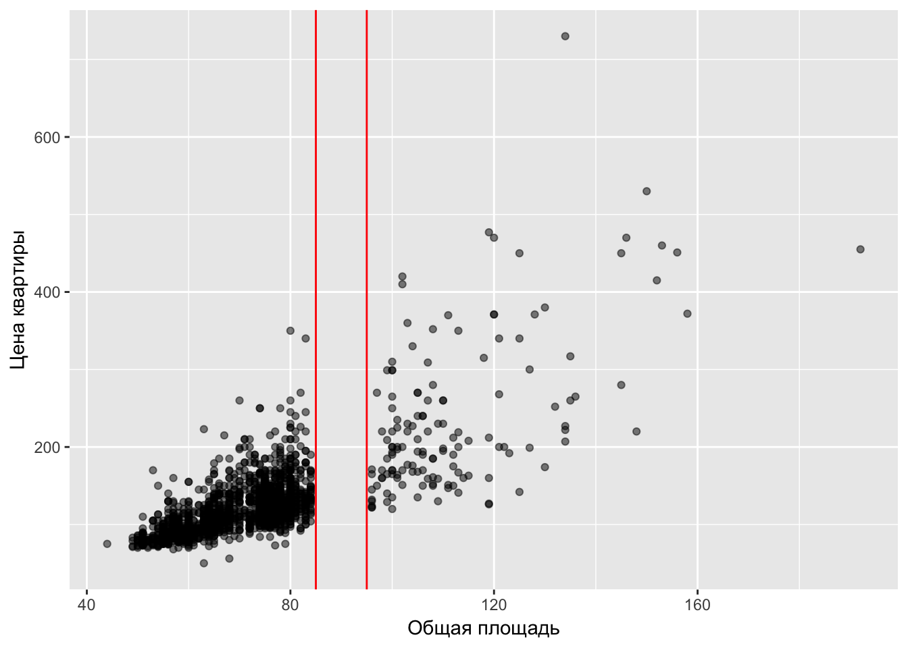
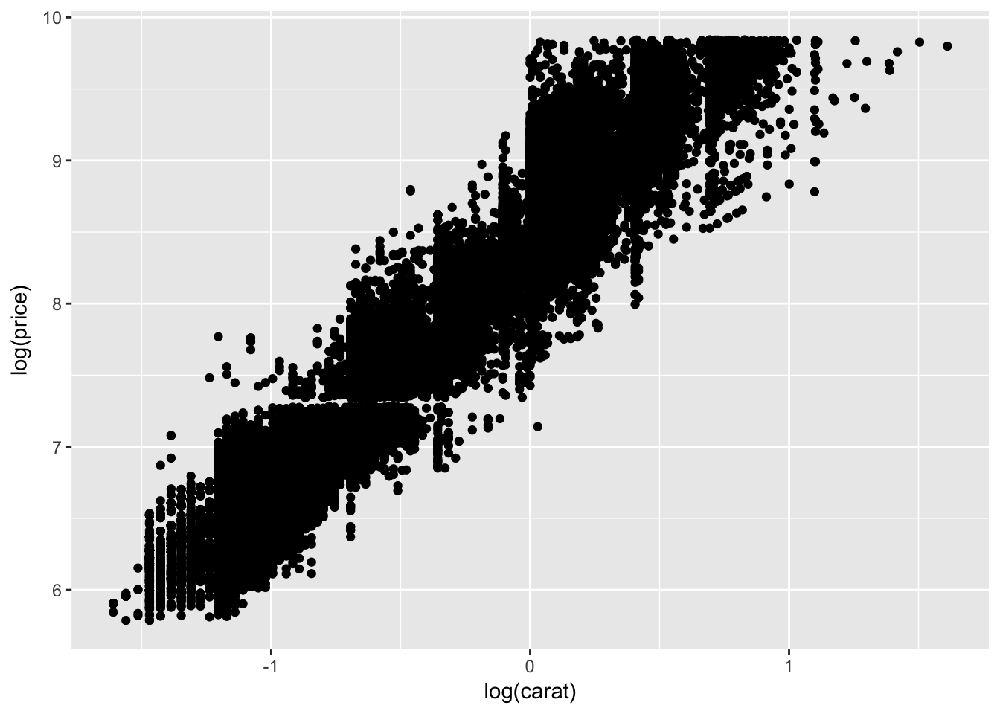

12 Конспект семинара 14. Гетеро или гомо? {hetero_or_homo}
Для начала стоит определить, что такое Гетероскедастичность!!!
Определение, украденное с Википедии: Гетероскедастичность (англ. heteroscedasticity) — понятие, используемое в прикладной статистике (чаще всего — в эконометрике), означающее неоднородность наблюдений, выражающуюся в неодинаковой (непостоянной) дисперсии случайной ошибки регрессионной (эконометрической) модели. Гетероскедастичность противоположна гомоскедастичности, означающей однородность наблюдений, то есть постоянство дисперсии случайных ошибок модели.
Другими словами: \[Var(u_i|X) \neq {const} = f(x_i)\]
12.0.1 Какие последствия отсюда вытекают?
Хорошие последствия:
\(\widehat{\beta}\) - несмещенно
\(\widehat{\beta}\) - состоятельно
Плохие последствия:
- \(\widehat{\beta}\) - неэффективно
\[\left(\frac{\widehat{\beta}_i-\beta_i}{se(\widehat{\beta}_i)}\right) \nrightarrow N(0, 1)\]
(!) Для борьбы с гетероскедастичностью нужно знать структуру самой гетероскедастичности!
Например, на прошлом семинаре была доказано, что:
\[\left(\frac{\widehat{\beta}_i-\beta_i}{se_{hco} (\widehat{\beta}_i)}\right) \rightarrow N(0, 1)\]
В данном случае индекс hco означает heteroscedasticity consistent, т.е. гетероскедастично устойчиво. Говоря языком программистов и статистов, берутся робастные стандартные ошибки.
\(se_{hco} (\widehat{\beta}_i)\) добывается с диоганали матрицы \(\widehat{var}(\widehat{\beta}|X)=(X'X)^{-1}\widehat{\Omega}X(X'X)\)
\[ \widehat{\Omega}_{hco}=\begin{pmatrix} \widehat{u}^2_1 & \ldots & \ldots & 0 \\ 0 & \widehat{u}^2_2 & \ldots & \ldots \\ \ldots & \ldots & \ldots & \ldots \\ 0 & \ldots & \ldots & \widehat{u}^2_n \\ \end{pmatrix} \]
12.0.2 Обнаружение гетероскедастичности
- Графическое
Для наглядного примера возьмём датасет про зависимость стоимости квартир от площади.

График с явной гетероскедастичностью
На данном графике красными линиями обозначены примерные отклонения. Отчетливо видно, что в зависимости от значения площади наблюдается разный разброс в ценах квартир.
Как правило, причиной возникновения гетероскедастичности является размер объекта.
Например:
- размер семьи влияет на диспресию расходов и доходов
- размер компании влияет на разброс в доходах сотрудников
- можно придумать ещё много примеров
- Более утончённое графическое
Если \(Var(u_i|X) = \sigma^2\), то \(var(\widehat{u}|X) = (I-H)\sigma^2\). Можно заметить, что если u - гомоскедастично, тогда дисперсии всё равно будут разными (\(H=X(X'X)^{-1}X'\)). То есть \(Var(\widehat{u}_i|X)=g_i(X)\)
Что же делать?
Можно отнормировать остатки!
\[ \widehat{u}^{*}_i=\frac{\widehat{u}^*_i}{\sqrt{1-h_{ii}}} \]
В данном случае \(h_{ii}\) это диагональные элементы матрицы H
\[\Rightarrow Var(\widehat{u}^*_i)=\sigma^2\]
Следовательно, в случае в случае гомоскедастичности дисперсия будет постоянной величиной.
В случае же гетероскедастичности график будет выглядить следующим образом (возьмём тот же пример с квартирами):

В даном случае строится график зависимости \(\widehat{u}^{*2}_i\) или \(|{\widehat{u}^*_i}|\) от переменной, преположительно виновной в гетероскедастичности.
- Тесты
Как делаются большинство тестов:
Шаг №1
Оценим \(y_i = \beta_i+\beta_2x_i+u_i\)
Отсюда получим \(\widehat{u}_i\)
Шаг №1.5
\[\widehat{u}^*_i=\frac{\widehat{u}_i}{\sqrt{1-h_{ii}}}\] Шаг 2: вспомогательная регрессия
Строим регрессию «размера остатка», это может быть \(\widehat{u}^2_i\), \(|\widehat{u}_i|\) или \(\log\widehat{u}_i\) на объясняющие переменные:
\[ \text{размер остатка}_i = \gamma_1+\gamma_2z_i+\gamma_3w_i + \ldots+ \gamma_h r_i + \nu_i \]
- В случае \(\hat u^2_i\) используется тест Бройша — Пагана (про него можно подробно почитать на википедии)
Далее проверем гипотезу о гетероскедастичности:
\[ H_0:\gamma_1=\gamma_2=...=\gamma_h=0, \text{гомоскедастичность} \]
\(H_a\): хотя бы один из коэффициентов \(\gamma_1\), \(\gamma_2\), , \(\gamma_h\) отличен от нуля.
Далее для проверки можно взять одну из тестовых статистик:
F-test
\[ F_{test}=\frac{(RSS_R-RSS_{UR})/q}{RSS_{UR}/n-k_{UR}} \]
где
- \(RSS_{R}\) - это сумма квадратов остатков модели с ограничениями
- \(RSS_{UR}\) - это сумма квадратов остатков модели без ограничений
- \(q\) - это количество ограничений
- \(n\) - это объём выборки
- \(k_{UR}\) - это количество параметров модели без ограничений
Тест множителей Лагранжа
\[ LM=nR^2_{step2} \sim \chi^2_{n-1} \]
где
- \(R\) - коэффициент детерминации
- \(n\) - количество ограниченй
Тест Голдфельда-Квандта (Goldfeld-Quandt)
\[ \begin{cases} H_0:Var(u_i|x_i)=\sigma^2\\ H_a:Var(u_i|x_i)=f(x_i) \\ \end{cases} \]
Далее наблюдения сортируются по подозреваемому росту (по дисперсии). Из сортированной выборки выкидываются наблюдения с средней дисперсией (как правило, избавляются примерно от 20%). Далее берётся F-статистика.
Выходит примерно следующая картина:

\[ F=\frac{RSS2/(n_2-k)}{RSS_1/(n_1-k)} \sim F(n_2-k, n_1-k) \]
где
- \(RSS_1\) - сумма квадратов остатков части выборки с низкой дисперсией
- \(RSS_2\) - сумма квадратов остатков части выборки с высокой дисперсией
- \(n_1\) - количество наблюдений с низкой дисперсией
- \(n_2\) - количество наблюдений с высокой дисперсией
- \(k\) - количество ограничений
Примечание: если \(n_1=n_2\), тогда статистика равна:
\[ F=\frac{RSS_2}{RSS_1} \]
Если F большое \(\Rightarrow H_0\) отвергается (т.е. наблюдается гетероскедастичность).
12.0.3 Так делать нехорошо:
Протестировать наличие гетероскедастичности
Если гипотеза о гомоскедаксичности отвергнута, использовать робастные стандартные ошибки(\(se_{hco} (\widehat{\beta}_i)\))
Если гипотеза о гомоскедастичности отвергнута, использовать обычные стандартные ошибки (\(se(\widehat{\beta}_i)\))
12.0.4 Примечание
Как делают нормальные люди:
RSS - Residiual Sum of sq = \(\widehat{u}^2_i\)
ESS - Explained Sum of sq = \(\sum (\widehat{y}^2_i-\bar{y}_i)^2\)
Как делают гопники:
ESS - Error Sum of sq = \(\widehat{u}^2_i\)
RSS - Regression Sum of sq = \(\sum (\widehat{y}^2_i-\bar{y}_i)^2\)
12.0.5 Пакеты для R:
- tidyvers
- lmtest
- memisc
- sandwich
12.0.6 Немного R
glimpse(diamonds)## Observations: 53,940
## Variables: 10
## $ carat <dbl> 0.23, 0.21, 0.23, 0.29, 0.31, 0.24, 0.24, 0.26, 0.22, ...
## $ cut <ord> Ideal, Premium, Good, Premium, Good, Very Good, Very G...
## $ color <ord> E, E, E, I, J, J, I, H, E, H, J, J, F, J, E, E, I, J, ...
## $ clarity <ord> SI2, SI1, VS1, VS2, SI2, VVS2, VVS1, SI1, VS2, VS1, SI...
## $ depth <dbl> 61.5, 59.8, 56.9, 62.4, 63.3, 62.8, 62.3, 61.9, 65.1, ...
## $ table <dbl> 55, 61, 65, 58, 58, 57, 57, 55, 61, 61, 55, 56, 61, 54...
## $ price <int> 326, 326, 327, 334, 335, 336, 336, 337, 337, 338, 339,...
## $ x <dbl> 3.95, 3.89, 4.05, 4.20, 4.34, 3.94, 3.95, 4.07, 3.87, ...
## $ y <dbl> 3.98, 3.84, 4.07, 4.23, 4.35, 3.96, 3.98, 4.11, 3.78, ...
## $ z <dbl> 2.43, 2.31, 2.31, 2.63, 2.75, 2.48, 2.47, 2.53, 2.49, ...Посмотрим на график зависимости цены и карата бриллианта
qplot(data = diamonds, x = carat, y = price) Видна гетероскедастичность Поробуем прологарифмировать.
Видна гетероскедастичность Поробуем прологарифмировать.
qplot(data = diamonds, x = log(carat), y = log(price)) Гетероскедастичность осталась.
Построим модель регрессии, где карат - объясняющая переменнаяб цена - зависимая переменная.
model <- lm(data = diamonds,
log(price) ~ log(carat))
coeftest(model)##
## t test of coefficients:
##
## Estimate Std. Error t value Pr(>|t|)
## (Intercept) 8.4486607 0.0013647 6190.90 < 2.2e-16 ***
## log(carat) 1.6758167 0.0019338 866.59 < 2.2e-16 ***
## ---
## Signif. codes: 0 '***' 0.001 '**' 0.01 '*' 0.05 '.' 0.1 ' ' 1coeftest(model, vcov. = vcovHC)##
## t test of coefficients:
##
## Estimate Std. Error t value Pr(>|t|)
## (Intercept) 8.4486607 0.0014750 5728.1 < 2.2e-16 ***
## log(carat) 1.6758167 0.0020278 826.4 < 2.2e-16 ***
## ---
## Signif. codes: 0 '***' 0.001 '**' 0.01 '*' 0.05 '.' 0.1 ' ' 1тест Breush-Pagan (White)
bptest(model, varformula = ~ log(table) + log(carat), data = diamonds)##
## studentized Breusch-Pagan test
##
## data: model
## BP = 449.18, df = 2, p-value < 2.2e-16тест Goldfeld-Quandt
Чтобы отловить какая величина виновата в гетероскедастичности
gqtest(model, fraction = 0.2, order.by = diamonds$table)##
## Goldfeld-Quandt test
##
## data: model
## GQ = 1.004, df1 = 21574, df2 = 21574, p-value = 0.3834gqtest(model, fraction = 0.2, order.by = diamonds$carat)##
## Goldfeld-Quandt test
##
## data: model
## GQ = 1.3634, df1 = 21574, df2 = 21574, p-value < 2.2e-1612.0.7 Полезные ссылочки
Ссылки на одну свободную энциклопедию:
Собственно гетероскедастичность Википедия
F-тест Википедия
Тест множителей Лагранжа Википедия
Тест Бройша — Пагана Википедия
Тест Голдфелда — Куандта Википедия
Прочие ссылки:
- Компьютерная гетероскедастичность от занимательного исследователя Гетероскедастичность в R
- Еще один рример определения гетероскедастичности в R R-bloggers